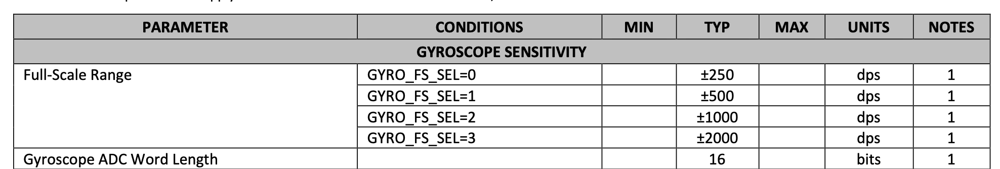
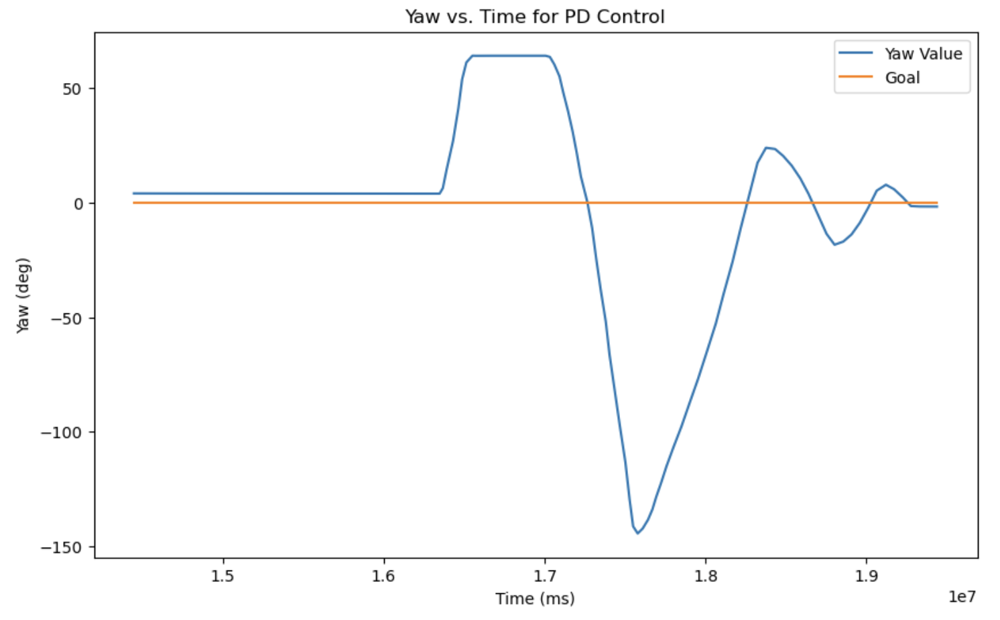
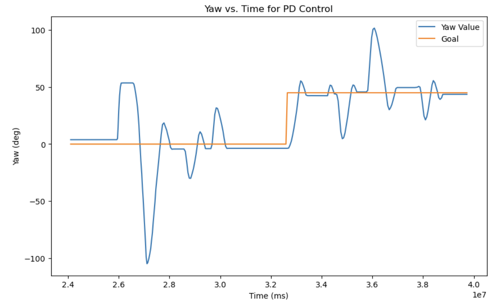
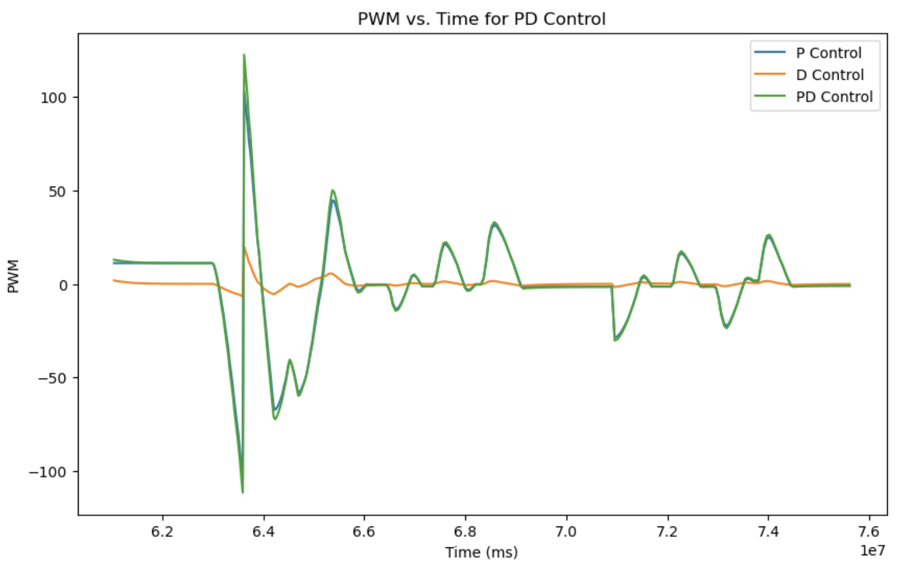
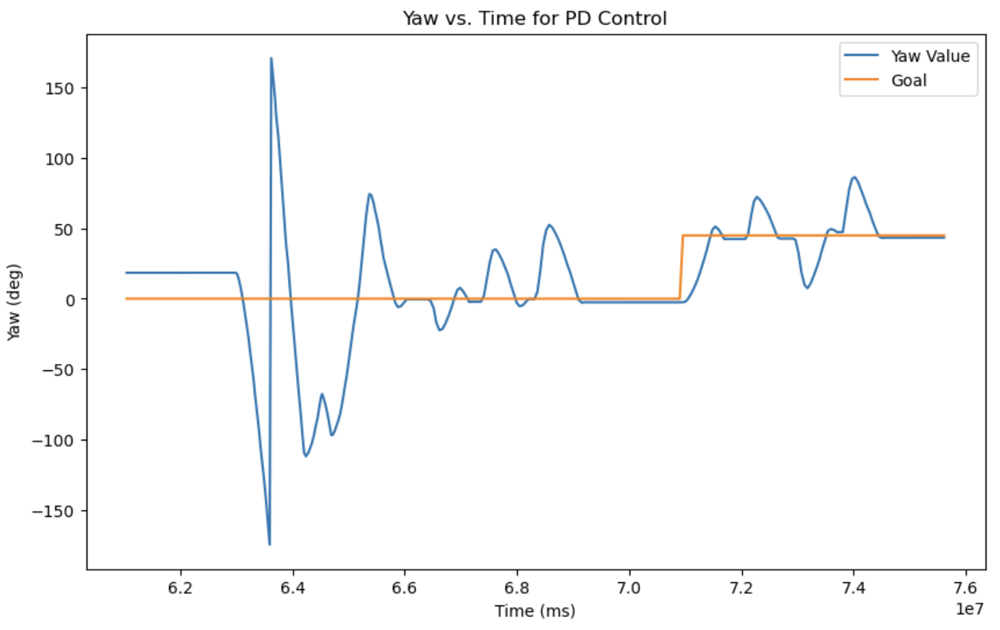

Lab 6: Orientation PID
Prelab
Before starting lab 6, I wanted to have a working PD controller so I worked on that first. I created a class called PIDController and LowPassFilter to declutter my main code, which can be found in the appendix below. Thanks Jeffery for helping me with this!
There were a lot of changes to my code from the previous lab, as my lab 5 was quite unsatisfactory (I probably should have used an extension).
Like the previous lab, I set up bluetooth commands to change gains, start and stop PID control for orientation, then send over the data.
I also added a command to change the setpoint angle, so that I can change the goal angle while the controller is running. Below are some code snippets showing how I setup my notification handler and commands.
PID Input Signal
While deciding on what method to use to get the yaw value from the gyroscope, I remembered from lecture that we cannot implement complementary filter to mitigate drift for yaw since there is no acceleromoter data for it. I also saw in lab 2 that my drift on the IMU was not negligible as integrating gyroscope data over time accumulates error, so I decided to follow Stephan Wagner's extremely-easy-to-understand-and-follow tutorial to use the DMP instead. Code setup for DMP implementation can be found below in the appendix.
The datasheet for our IMU states that the maximum spin rate of the gyroscope is 250 dps. This isn't sufficient for our case, since the robot can clearly make multiple rotations within a second. We can change the sensitivity of the gyroscope using different ranges, like in the screenshot below.
Derivative Term
The PID controller computes the derivative of the yaw angle to determine the D-term. If yaw were obtained purely by integrating raw gyroscope data, this approach could introduce unnecessary noise, as gyroscopes tend to accumulate drift over time. The integration process would amplify small measurement errors, leading to an unstable or unreliable derivative term. However, as the yaw value from the DMP is a sensor-fused estimate that combines information from the gyroscope, accelerometer, and magnetometer to correct for drift and improve accuracy, the yaw value from the DMP is more stable and less prone to accumulating long-term errors. Since the DMP-provided yaw is a processed and corrected signal, differentiating it to compute the derivative term makes sense. The derivative of this filtered signal will be a more reliable estimate of angular velocity compared to using raw gyroscope readings alone, which can be noisy and subject to bias.
Changing the setpoint during while running the robot will cause derivative kick, as there is a large instantaneous change in the error value. This can be handled using a low pass filter.
Programming Implementation
I added Serial.print statements to track the execution of the main loop, printing "IMU Data Ready" on each iteration, along with the measured IMU data. This allowed me to compare the loop speed with the IMU sampling rate.
From the output, I observed that for every IMU data update, the main loop iterates approximately 8 to 9 times. By printing millis(), I found that the main loop runs at around 330 Hz, while IMU updates at 19 Hz.
Although there is a slight difference between the two rates, it is negligible compared to the much slower sampling rate (about 1/50 of the main loop rate) of the time of flight sensor. Given this small discrepancy, I decided not to decouple the IMU data collection from the main loop for this lab.
Below is a video of the robot using P control with Kp = 0.7, tested while suspended in the air. It cam be seen that the wheel turns in the correct direction to restore its original position.
My Kp and Kd values were chosen experimentally. When testing on the floor, P control alone proved insufficient. With Kp < 0.5, the robot couldn’t overcome friction and failed to move, but with Kp > 0.6, there was too much overshoot causing the robot to continuously spin in one direction. So I added a small D term and it fixed the problem!
Below is a video of my orientation control with values Kp = 0.6, Kd = 0.02.
Below are plots of my PD controller, with the first one where the setpoint is set to 0˚, and the second one where the setpoint is changed to 45˚ halfway.
 This is a video of the second scenario, where I change the setpoint!
I almost forgot to add the plot showing PWM values.
Below is the corresponding Yaw vs. time graph.
Something I would like to work on is implementing I control with windup, so I have a full PID controller working.
Appendix
- PID Controller Class
- Low Pass Filter
- DMP Code setup
- Yaw Calculation using DMP
References and Acknowledgements
- Jeffery Cai and Evan Leong for being a personal TA. Always helping me debug, and for Jeffery, also never forgetting to make fun of me.
- Adafruit forum for two point callibration
- Stephan Wagner's website
- ChatGPT for correcting grammar and spelling errors & helping with debug steps
- Bootstrap template for website